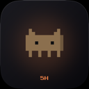
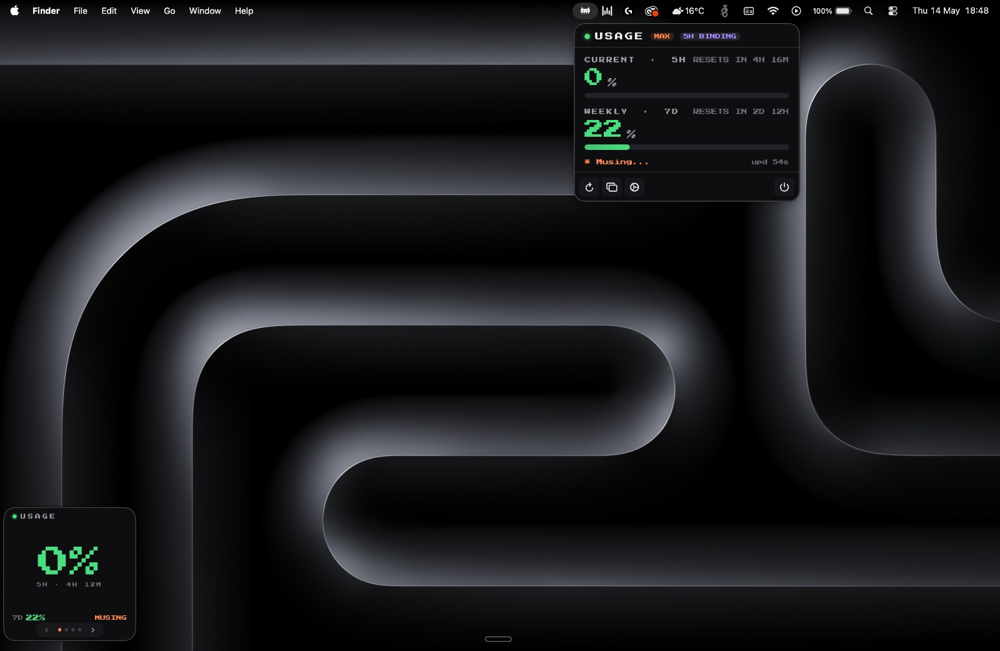

Live in the menu bar
Five icon styles — numeric, mini bar, mascot, dual bar, hybrid. The monochrome capybara silhouette adapts to your light or dark menu bar automatically.

ClawdBarNative macOS menu-bar app. Reads your existing Claude Code login. Surfaces live 5-hour and 7-day rate-limit usage. Zero setup beyond brew install.
brew install --cask rauppvj/tap/clawdbar
macOS 15 (Sequoia) or newer · Claude Pro / Max / Team · MIT licensed

Five icon styles — numeric, mini bar, mascot, dual bar, hybrid. The monochrome capybara silhouette adapts to your light or dark menu bar automatically.
Plan pill, 5h session bar, 7-day weekly bar, reset countdowns. A mood line rotates through Anthropic-style verbs — Cogitating, Pondering, Brewing, Smelting.
Pin a live readout anywhere. Carousel between current usage, a 7-day heatmap, weekly stats, and the Tamagotchi page where the capybara sits in a pool whose water rises with usage.
Set warning + critical thresholds per window. Get a native macOS notification when you hit them. No more "you've hit your limit" surprises mid-flow.
Light day. The capybara naps quietly. You have hours of headroom.
Steady use. She blinks occasionally. The bar is comfortable. Keep shipping.
You're cooking. She rocks forward with you, eyes scanning the work.
The 5-hour window is closing. She shakes, eyes wide. Time to take a break.
The Claude Code OAuth token lives as Claude Code-credentials in your macOS Keychain. ClawdBar reads it via SecItemCopyMatching — never copies it anywhere, never sends it anywhere except api.anthropic.com.
Polls /v1/messages with max_tokens: 1 and parses the anthropic-ratelimit-unified-* response headers. About 1.4k tokens/day in total — on the order of US$ 0.0001/day.
Four shell commands in CONTRIBUTING.md enumerate every dependency, every network endpoint, every bundled asset. Zero third-party Swift deps — only Apple frameworks.
api.anthropic.com.~/.clawdbar/history.jsonl. iCloud sync of any usage data is explicitly out of scope.brew install --cask rauppvj/tap/clawdbar
No Homebrew? Download the latest DMG from GitHub Releases. First launch needs a right-click → Open, or run xattr -dr com.apple.quarantine /Applications/ClawdBar.app once.